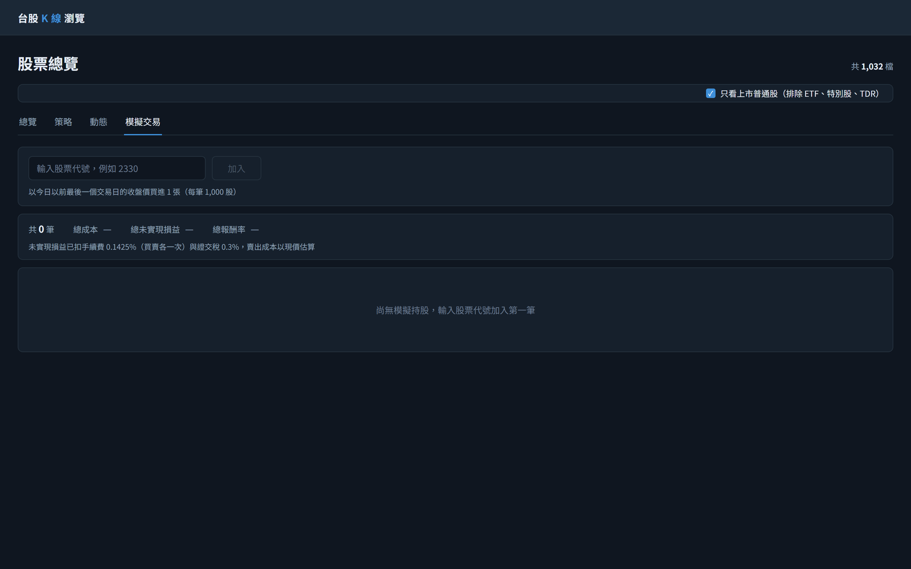
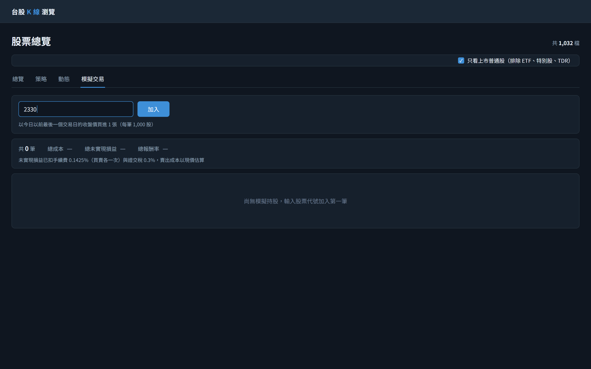
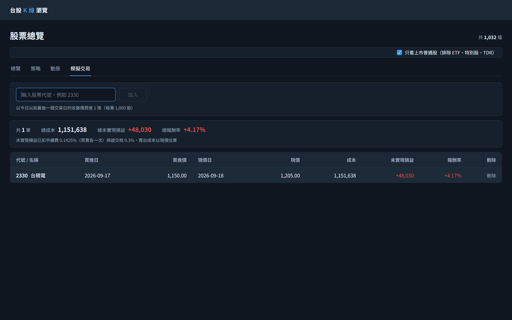
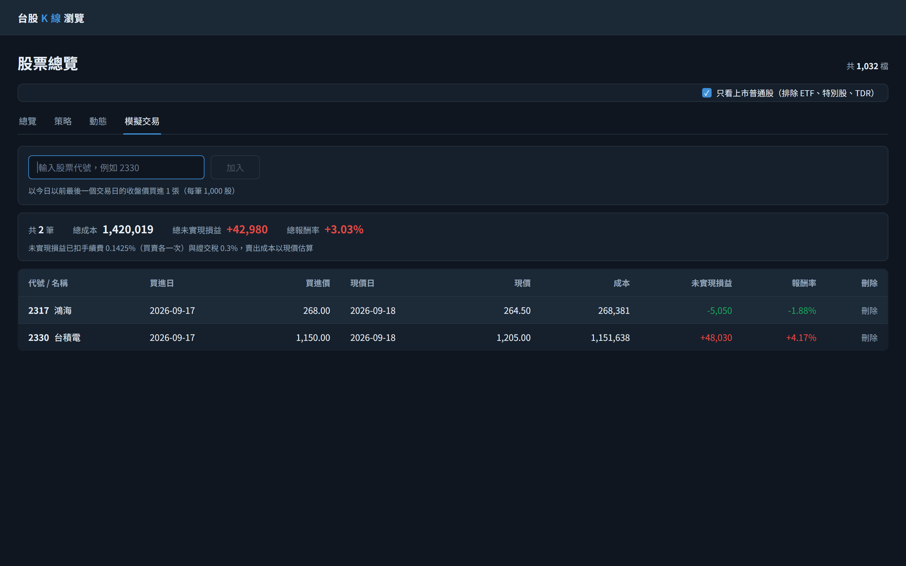

1初始畫面：切到第四個頁籤「模擬交易」（網址 /stocks?tab=simulated）。進頁即取一次列表，目前沒有任何模擬持股，所以表格不顯示，改以弱化色說明「尚無模擬持股，輸入股票代號加入第一筆」，摘要列的三個總計顯示「—」而不是 0／0%。加入列只有一格代號輸入，畫面上沒有任何買進日、買進價或張數欄位——那三項都由後端決定（今日以前最後一個有收盤價的交易日、該日收盤、固定 1 張），這是本分頁刻意選擇的形狀。輸入為空，「加入」因此 disabled。頁籤列上方的「只看上市普通股」照常顯示，但本頁不受它影響：切換它時本頁不重新查詢、請求也不帶 commonStocksOnly。
GET/api/simulated-trades進入分頁（含由其他分頁切回、重新整理）即取一次；此時 items 為空陣列、兩個總額為 0、totalReturnPercent 為 null，畫面因此顯示三個「—」，同一份回應的 feeRatePercent／taxRatePercent 組成下方費率說明那一行
GET/api/stocks?page=1&size=1/stocks 頁面層級常駐的「共 N 檔」，由頁面本身發出，與本分頁的持股無關

2在代號輸入框打入 2330：輸入框取得焦點（邊框轉為 #3E8FD8），「加入」隨即由 disabled 轉為可按。前後空白會自動去除，送出的代號就是 2330；按 Enter 與按「加入」等效。此步驟純前端，不發任何請求。

3按「加入」：後端以今日（2026-09-18）以前最後一個有收盤價的交易日 2026-09-17、收盤 1,150.00 建立一筆 1 張的持股。成功後輸入框清空、游標留在輸入框（可以連續加入好幾檔），新的一筆以列閃爍一次（#1D2A38）提示。表格與摘要列同時出現：成本 1,151,638 已含買進手續費 1,638，未實現損益 +48,030 已扣以現價估的賣出手續費 1,717 與證交稅 3,615。三個總計直接取回應的值，前端不自行加總。
POST/api/simulated-tradesbody 只有一個 stockId「2330」；買進日、買進價與股數都不由呼叫端指定，多帶也會被忽略
GET/api/simulated-trades加入成功後重新取得列表，讓三個總計與列的排序一律由後端決定

4在輸入框再打入 2317 後按 Enter（等同按「加入」）：第二筆建立完成並重新取得列表。列依後端回的順序呈現（買進日由新到舊、同日代號升冪），2317 因此排在 2330 上面，前端不重排也不提供排序，列本體不可點。漲跌色以實際渲染色為準：台積電 +48,030／+4.17% 為 #E04B45，鴻海 -5,050／-1.88% 為 #16A75C，成本與兩個價格恆為 #E6EDF5。三個總計更新為 1,420,019／+42,980／+3.03%——總報酬率是成本加權，不是兩檔報酬率的算術平均。每列最右的「刪除」按下即送出 DELETE、不跳確認框。
POST/api/simulated-tradesbody 只有一個 stockId「2317」；按 Enter 與按「加入」送出同一支端點
GET/api/simulated-trades加入成功後重新取得列表，兩筆與三個總計都由這次回應決定